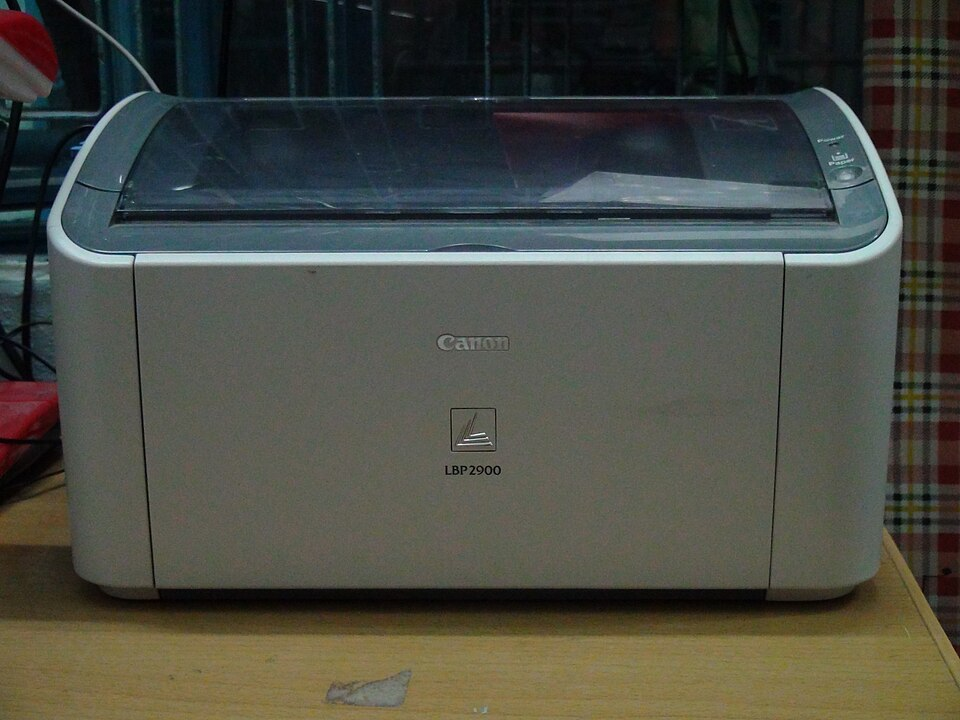

Лазерный · CAPT 2.71

Canon LBP2900
Классический библиотечный лазерный принтер. Решает проблему спящего режима, настраивает службу ccpd и создает очередь печати при подключении по USB.
- Драйвер Canon CAPT 2.71 (32 / 64-bit)
- Модуль ядра usblp и служба ccpd в systemd
- Автоочередь в CUPS (готов к печати сразу)
$
curl -fsSL https://biblioteka33.ru/linux/scripts/canon-lbp2900.sh | sudo bash